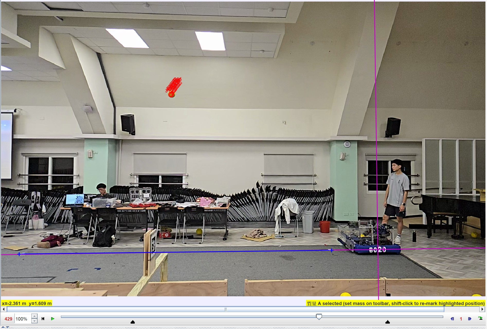
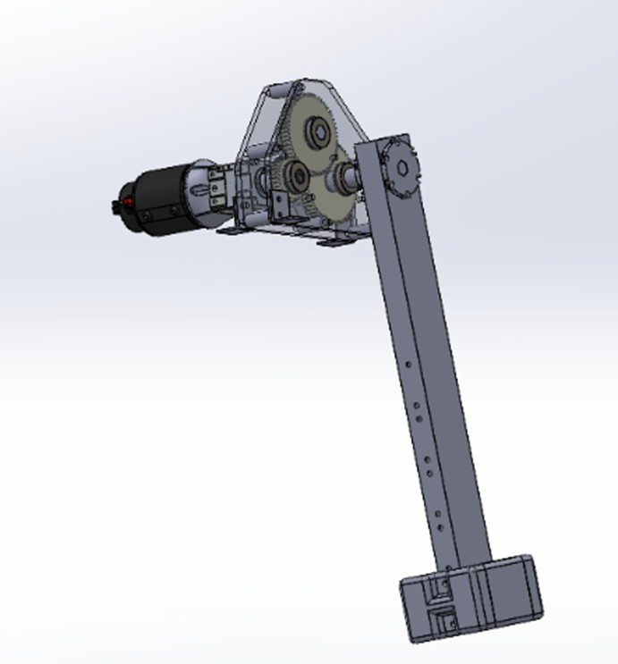

Experimental research
Research
Investigating how physical systems behave through experiments, measurements, and analysis.

01 / Experimental mechanics
Flywheel Surfaces & Trajectory Consistency
Comparing three contact surfaces across launch settings and ball-compression groups.
NHSJS revisions completedNational High School Journal of ScienceTaiwan Academic Essay Competition · Awaiting results
Explore the study ↗
02 / FRC control systems · Team research
System Identification
5th PlaceNational Nanke Experimental High
FRC Essay Competition
FRC Essay Competition
Checking feedforward parameter estimates against independent measurements.
Explore the study ↗